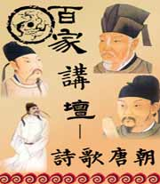
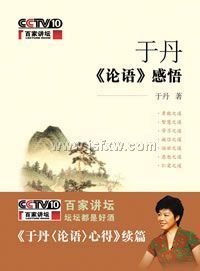
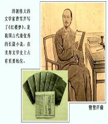
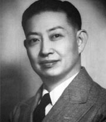
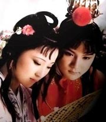
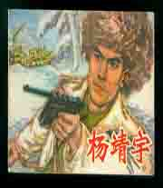
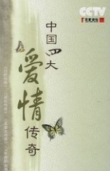

百家讲坛 马未都说收藏
介绍：
当收藏成为一种怀旧的时尚，当收藏成为一种财富的标志，有关于收藏的种种故事和传说就成为了街头巷尾的热门话题，也自然会有许许多多的人投身于这样一个全民淘宝的热潮之中，或许您也正在跃跃欲试，或许您的家里也有宝贝待价而沽，但是，推开令人眩目的收藏之门...

百家讲坛 历史人物的悲剧
介绍：

百家讲坛 诗歌唐朝
介绍：
历代的诗歌成就，最接近唐诗的是宋诗，就是元明清那段比较差一点，宋诗最接近唐诗，宋代的诗人对唐诗就有非常高的评价，我们看北宋三大诗人之一王安石，王安石说过一句话，说“世间好语言，以被老杜道尽”，老杜就是杜甫，就是世界上好的句子都被杜甫给写完了...

百家讲坛 于丹《论语》感悟
介绍：
在中国儒家文化中，特别提倡孝道，孔子认为，孝，是做人的根本道德，所以中国的传统文化提倡：百善孝为先。但是从父父子子，君君臣臣的封建社会发展出来的孝道，在两千多年后的今天，是否还是那么重要？在日新月异的现代社会里...
百家讲坛 康熙大帝
介绍：
全面介绍了康熙皇帝起伏跌宕的人生，特别是６１年的执政经历，从国际、平民、电视、公正和人文等五大视角，对康熙帝的成长经历、丰功伟绩、日常生活、遗憾缺失等一一进行了阐述。
百家讲坛 周汝昌眼中的四大名著
介绍：
在我国文学史上，有四部小说被人们誉为“四大名著”，它们是《三国演义》、《水浒传》、《西游记》和《红楼梦》，小说作为一种文学样式，有着漫长而复杂的发展过程。四大名著无疑是其中的最高峰。那么，如果我们追根溯源，四大名著的源头究竟是什么...

百家讲坛 周岭解密曹雪芹
介绍：
八七版电视剧《红楼梦》编剧周岭通过史料讲述了《红楼梦》作者曹雪芹的相貌、脾气秉性、行事风格，以及曹雪芹的诗歌、卒年和年龄。

百家讲坛 唐史系列03_唐高宗真相
介绍：
唐高宗，唐朝历史上一个尴尬的皇帝。人们一提起他，首先想到的就是他的父亲唐太宗，以及他的夫人武则天，他本人的身影反倒模糊不清。他的很多行为，也让后人分不清究竟是懦弱还是精明。有人说他是懦弱无能，有人说他是精明智慧，那么，他的真实形象是什么呢...

百家讲坛 梅兰芳
介绍：
华东师范大学研究员翁思再讲述了抗日战争期间梅兰芳是如何抗日爱国的，解放后梅兰芳又如何改革和保护京剧的以及梅兰芳晚年对京剧的贡献。

百家讲坛 千古中医故事
介绍：

百家讲坛 解读中医
介绍：
在人类面临灭绝的危险时是植物的根茎花果，使中华民族生生不息，一次又一次的解决了疾病给人们带来的灾难和痛苦。本期节目讲述富有神秘色彩的中医的来源。

百家讲坛 《红楼梦》中的节日
介绍：
八七版电视剧《红楼梦》编剧周岭讲述了《红楼梦》中描写的端午节与春节。

百家讲坛 王立群读《史记》秦始皇（2011年有重播，转至重播页面。）
介绍：
秦朝作为中国统一多民族封建国家的肇始，在史册上留下了彪炳千秋的厚重笔墨。秦始皇十三岁继承秦国王位。二十二岁亲理朝政，三十九岁完成了统一中国的大业，缔造了一个大一统的大秦帝国。他自称始皇帝，希望他的王朝传之无穷。然而这个伟大帝国仅仅历时十五年就轰然倒塌...

百家讲坛 康熙陵寝之谜
介绍：
公元1712年12月20日，康熙皇帝病死在畅春园，享年六十九岁。这位将清朝带入盛世的“千古一帝”，他死后会葬于何处？康熙皇帝陵寝的修建，遇到了哪些不为人知的故事？在神秘的康熙陵寝地宫中，究竟埋藏着什么？又会有哪些后妃能够得以和康熙帝死后合葬...

百家讲坛 抗日名将杨靖宇
介绍：
中共黑龙江省委政法委调研员张望朝继续讲述杨靖宇将军卓越的指挥才能，1984年中央军委公布了中共中央正式认可的三十三位军事家名单，杨靖宇位列其中。杨靖宇自1932年赴南满领导抗日游击战争，历任中国工农红军第三十二军独立师师长兼政委、东北人民革命军第一军独立师师长兼政委...

百家讲坛 李煜
介绍：
李煜，五代十国时南唐国君，961年-975年在位，字重光，初名从嘉，号钟隐、莲峰居士。就在李煜登基的前一年，后周将领赵匡胤发动了陈桥兵变，取代后周，建立了宋朝。李煜，成为国力日益衰弱的南唐最后一任君主...

百家讲坛 胡雪岩的启示
介绍：
《胡雪岩的启示》一书根据曾仕强教授在《百家讲坛》的同名讲座整理而成，除了播出的内容之外，还将剪辑未播的2集内容一并整理在书中，以期能给读者展示一个更加全景的胡雪岩。

百家讲坛 太平公主
介绍：
太平公主(约670年―713年)，唐高宗李治之女，生母武则天。下嫁薛绍，再嫁武攸暨。生前曾受封“镇国太平公主”，后被唐玄宗李隆基赐死。太平公主是我国历史上赫赫有名的人物，她不仅仅因为是中国历史上第一个女皇武则天的女儿，而且几乎真的成了“武则天第二”。

百家讲坛 军旅作家王树增讲长征
介绍：
1931年1月、5月和9月、1933年3月中央苏区军民团结一致，先后打破了蒋介石数十万大军对中央苏区进行的四次大规模“围剿”，夺取了反“围剿”的胜利。巩固和扩大了中央苏区。1931年11月，第一次全国苏维埃代表大会在瑞金举行，宣布中华苏维埃共和国临时中央政府成立，毛泽东任主席。

百家讲坛 先秦诸子百家争鸣
介绍：
《先秦诸子百家争鸣》是一些脍炙人口的故事，这是一些必须铭记的姓名，这是一些仍在闪光的思想，这是一些难以忘却的情怀。这也是一场历时三百多年之久的跨世纪大辩论，儒墨争雄，儒道争锋，儒法争用，可谓纵横捭阖，机锋迭起，智慧纷呈，展现出无穷的魅力...

百家讲坛 道光与鸦片战争
介绍：
公元1782年9月的一个清晨，一名男婴降生在紫禁城内，他就是后来的道光皇帝，爱新觉罗・F宁。当道光皇帝降生的那一刻，也许他的父亲嘉庆皇帝和他的爷爷乾隆皇帝谁都没有意识到这位皇子在未来将要承担的责任与危难...

百家讲坛 道光陵寝之谜
介绍：
《道光陵寝之谜》讲述了道光皇帝，一个谨小慎微的守成君主，为什么敢于破坏祖制，断然废弃了在清东陵已经建好的陵寝？一个以节俭持家著称的抠门皇帝、为什么在建陵时却不惜挥金如土，无以复加？道光陵寝废弃与重建的背后，究竟会隐藏着怎样不为人知的秘密？

百家讲坛 京剧大师程砚秋
介绍：
讲述一代名伶京剧大师程砚秋的德艺双馨，以及他与徒弟之间的师生情缘。

百家讲坛 四大爱情传奇
介绍：
中华民族几千年的文明，孕育了无数美丽的传说。而这些传说在历史的长河中，不断演绎变化着，从中可以反映出一个民族文化、思想的发展与变化。浙江大学副教授段怀清，坐客百家讲坛，为我们讲述中国民间四大爱情传奇...

百家讲坛 大明第一谋臣刘伯温
介绍：
在大明王朝二百七十多年的历史上，有一位被后世称作大明王朝第一谋臣的刘伯温。而在五百多年来的中国历史上，刘基刘伯温更是一个被神化的非凡人物。相传是他所做的那一首《烧饼歌》，竟然准确预言了其后数百年发生的许多重大历史事件。

百家讲坛 范进中举
介绍：
《范进中举》是清代吴敬梓杰出现实主义长篇讽刺小说《儒林外史》中极为精彩的篇章之一。通过描写范进参加乡试中了举人一事，运用夸张的手法生动地描绘了他那喜极而疯的形象，深刻地揭露了这个士人的丑恶灵魂，同时通过他的命运变化反映了世态的炎凉...

百家讲坛 大变动中的中国
介绍：
1890年，北洋大臣李鸿章曾向皇帝报告：“北洋海军规模，足以雄视一切，渤海门户，深固未摇。”自以为从此中国海军可以称雄，海防已经巩固。西方海军年鉴也曾把中国海军排名世界第八位、亚洲第一位。那么中国是不是真像洋务派标榜的那样，已经“自强”了呢...